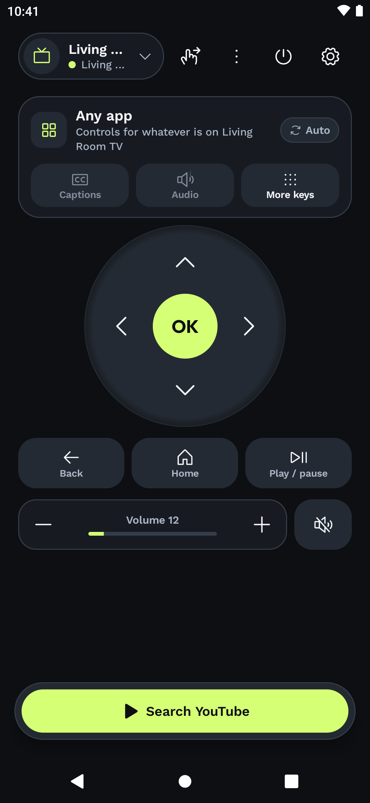
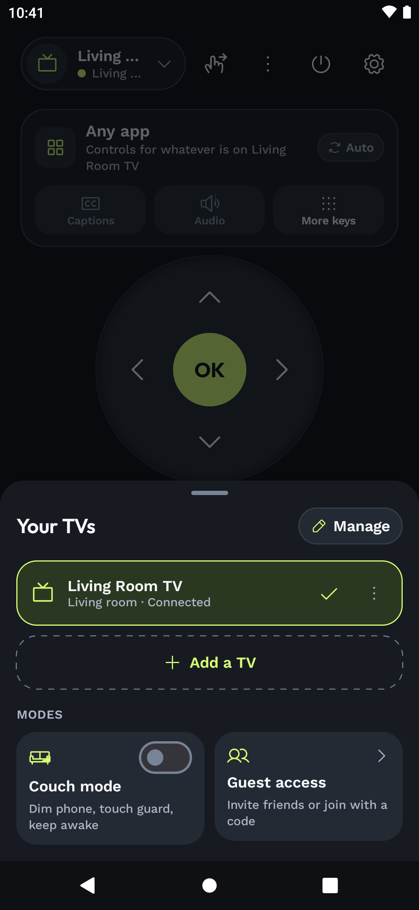
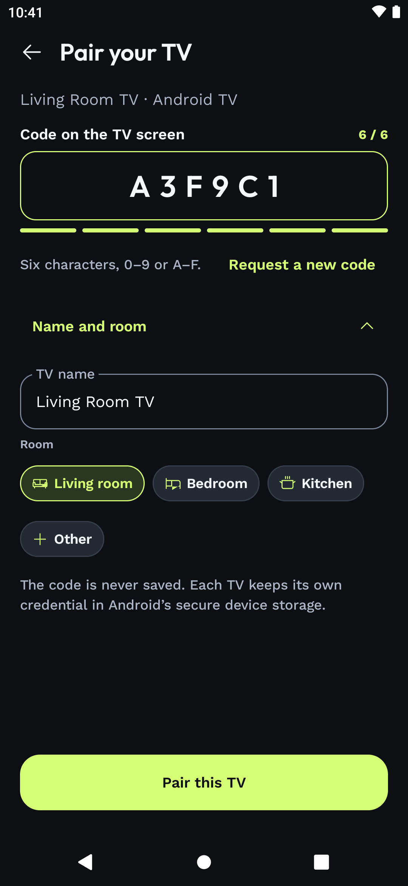
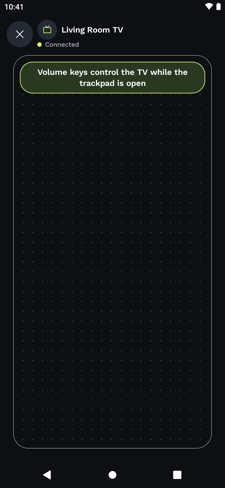
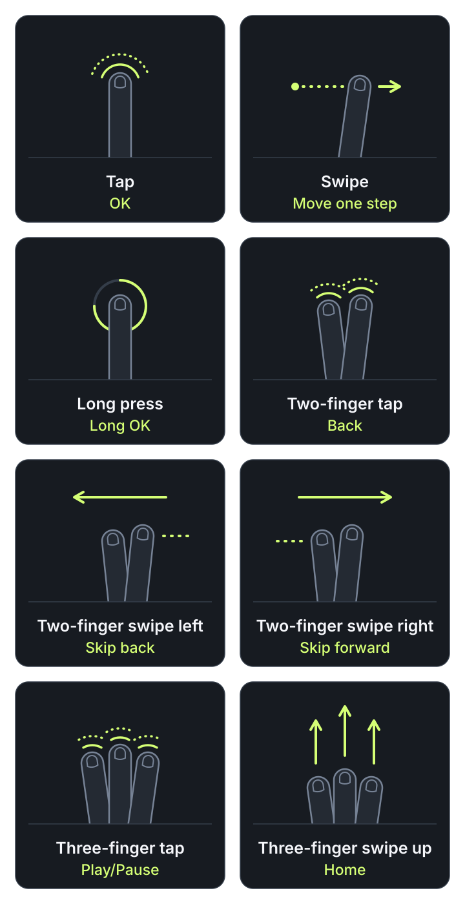
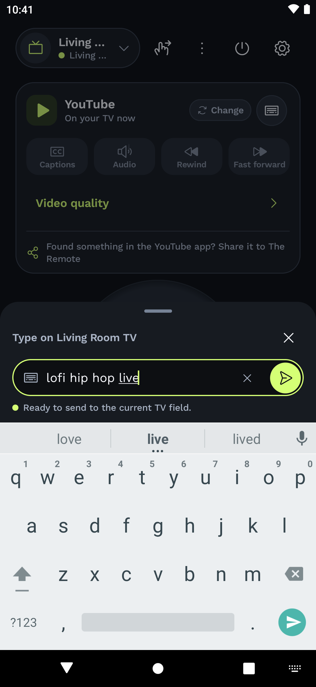
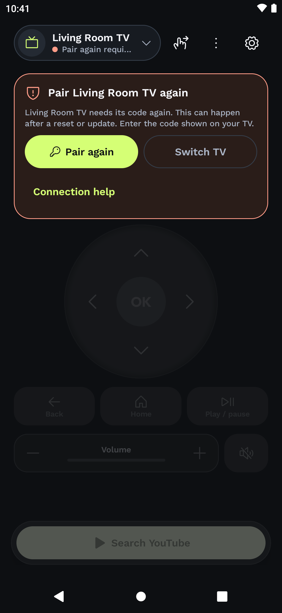

No ads. No account. Nothing to sign in to.
A free phone remote for Android TV and Google TV.
Type a YouTube search on your phone.
The results open on your TV.
A full keyboard for YouTube searches. A quick way to share a link. Your TVs, organized by room. Guests on their own phones.

Free Android APK. No ads. No account.
How YouTube search works ↗Search support depends on your TV and its YouTube version.

01 / Type it on your phone
Search YouTube
from your phone.
Type the search on your phone keyboard. The results open on your TV.

02 / Pass it over
Share a link.
It plays on the TV.
Share a YouTube link to The Remote, check it, and open it on Living Room TV.

03 / Your TVs
Name every TV
and sort them by room.
Your saved TVs sit in one list, each with its room.

04 / Give it a room
Living Room TV or Bedroom:
pick the TV first.
Name the TV and pick its room when you pair it.

Friends over
Hand out the remote,
not your phone.
Invite a guest from The Remote on your phone. They join on your home Wi-Fi with a short invite code, then control the TV from their own Android phone, even when yours is put away. They can scan the QR code with their phone's camera or type the code.

Step 1 · Invite
- Invite. Invites work on your home Wi-Fi only. Unused invite codes expire after 2 minutes and are only used for joining.

Step 2 · Their phone, full remote
- The full remote. Guests get everything on the remote by default: the arrows, media keys, volume, YouTube search, link sharing, Power and the apps list. They can’t rename the TV, change its room, manage guests or unpair it.

Step 3 · Your list
- Your list. Every Primary remote can invite and remove guests. If a phone is away, the list shows Removal pending until both phones are on your Wi-Fi. Guests who stop coming around are removed over time.
- Or just the basics. You can limit a guest to Media and volume only: play/pause, volume and mute.
Trackpad
Swipe and tap.
Eyes on the TV.
Open the trackpad and your whole phone screen becomes a pad for the TV, over the same connection as the remote.
- TapOK
- SwipeOne step that way. Swipe and hold still to keep moving.
- Long pressLong OK
- Two-finger tapBack. Your phone’s back gesture works too.
- Two-finger swipe leftSkip back (varies by app)
- Two-finger swipe rightSkip forward (varies by app)
- Three-finger tapPlay/Pause
- Three-finger swipe upHome
Your phone’s volume keys control the TV while the pad is open. One Exit button in the corner takes you back to the buttons. Help and remapping are on the Gestures screen. Power is never a gesture. Available controls vary by TV. Skip back and forward vary by app.
Every trackpad gesture ↗

And the everyday controls
Navigation, volume
and YouTube on one screen.
Navigation, volume and YouTube actions on one screen. Switch to Search to type a YouTube search on your phone keyboard.
App previews. Available controls vary by TV.
Type with your phone's keyboard
Type your YouTube search on your phone instead of the TV's letter grid, fix typos before you send, and the results open on the TV.

Make the names your own
Name your TV and pick its room when you pair it.

Reconnects to your saved TVs
Finds your TV again after days away, even if its address changed.
If a TV is reset or updated, it may ask for the code shown on the TV, keeping its name and room.

Will it work?
Works with Android TV
and Google TV.
The Remote works with Android TV and Google TV devices that support Android TV Remote Service v2. Your phone needs Android 8.0 or later. There's no iPhone version.
Your phone and TV pair over your home Wi-Fi. D-pad controls are the default; available controls vary by TV model and firmware. YouTube search and links depend on the TV's YouTube version. Guests join on the same home Wi-Fi, from their own Android phones.
Remote commands go to your paired TV over the local network, without a developer cloud relay. The Remote doesn't keep a search history.
Get The Remote
Free. No ads.
No account.
The Remote is free for Android phones and works with compatible Android TV and Google TV. No ads, no account, no signup.
01 Download the app on your Android phone.
02 If Android asks, allow installs from your browser.
03 Open the file and tap Install.
04 Pick your TV and enter the code it shows.
What you need
Phone: Android 8.0 or later. There's no iPhone version.
TV: Android TV or Google TV with Android TV Remote Service v2, on the same home Wi-Fi as your phone.
Controls vary by TV and firmware. Check your TV and optional extras.
Android phone APK
The Remote for Android.
Version 0.1.0-beta.9 · build 11
Requires Android 8.0 or later on your phone.
Download the appAPK size: 5.0 MiB
Android may ask you to allow installs from your browser or file manager. You can turn that off again after installing.
Installing or updating
Open the downloaded file and tap Install. To update, download the latest version from this page and open it. Android installs it over your current app when the app version and signing identity are compatible.
If Android rejects an update, keep the app you have and check that the file came from this page. Uninstalling removes locally saved TVs, pairings, and settings.
Check the APK checksum
Compare the downloaded file's SHA-256 with this release checksum.
b93bcf1e9cf6d9061a7fe1688cbfb8d905e9ca45e6815ea9cecfd36c10ee208dA matching checksum confirms these file bytes; it does not replace Android's installation and signature checks.
When the TV needs a hand
Answers for when
the TV won’t cooperate.
Android TV remote app can't find your TV? Start here
Find the failure stage before pairing everything again.
02 / 4 min readHow to type on Android TV with your phone
Get the right letters into the right search field.
03 / 4 min readLost your Android TV remote? What works before buying another
Recover control based on your TV’s network and setup state.
Questions, answered
Free, no account,
installs from this site.
Is The Remote free?
Yes. No ads, no in-app purchases, no subscription, and no account.
Is it on Google Play?
No. You download The Remote directly from this site. Tap Download the app on your Android phone, open the file, and install it.
Is installing the APK safe?
Download it only from this page. Android checks the app's signature before installing it, and you can compare the file's SHA-256 checksum in the download section. If Android asks you to allow installs from your browser, you can turn that off again afterwards.
Does it work on iPhone?
No. The Remote is for Android phones running Android 8.0 or later. There's no iPhone version.
Which TVs does it work with?
Android TV and Google TV devices with Android TV Remote Service v2. Available controls vary by model and firmware.
Do I need the YouTube app on my phone?
No. YouTube search and YouTube links go straight to the TV you pick, without YouTube on your phone. The TV's YouTube app and its version decide whether a search or link opens.
The app can't find my TV. What should I check?
Turn the TV on and put your phone on the same home Wi-Fi as the TV, not mobile data. Guest, hotel, and school networks, and routers with AP or client isolation turned on, can stop devices from reaching each other. Then search again.
The pairing code timed out. Now what?
Pairing codes only last a short time. Ask the TV for a new code and enter the one on the screen now, not one from an earlier try. If no code appears, check that you picked the TV in front of you.
Do I have to remove and re-add my TV after being away?
No. The Remote finds your TV again after days away, even if its address changed. If the TV was reset or updated, it may ask for the code shown on the TV again, and it keeps its name and room.
My TV stopped showing up after an update.
Let the update finish, turn the TV on, and check it's still on the same Wi-Fi as your phone. Then open The Remote. If it asks you to pair again, enter the new code shown on the TV. The TV keeps its name and room.
A YouTube search or link won't open on the TV.
Open YouTube on the TV, make sure it's up to date, and try again. Search and link support depend on the TV and its YouTube version. If the TV shows a sign-in or playback message, sort that out on the TV first.
The Audio track button didn't do anything. Is that fixed?
Yes. The Audio track button works in the latest version. Download it from this page to update.
I have more than one TV. How do I pick the right one?
Give each saved TV a name and a room, like Living room or Bedroom. Choose the TV before you send a YouTube search or link, so it opens on the screen you meant.
Can friends control the TV from their own phones?
Yes, with Guest access. Invite them from The Remote on your phone while they're on your home Wi-Fi, and they join with a short invite code. They can scan the QR code with their phone's camera or type the code. Unused invite codes expire after 2 minutes and are only used for joining. Guests need The Remote on an Android phone (Android 8.0 or later); there's no iPhone version. By default a guest gets everything on the remote: the arrows, media keys, volume, YouTube search, link sharing, Power and the apps list, even when your phone is put away. Guests can't rename the TV, change its room, manage guests or unpair it. You can limit a guest to Media and volume only, which allows only play/pause, volume and mute. A TV can have up to 10 guests.
Does a guest need the code shown on the TV?
Guests join with the invite from your phone. If a TV doesn't accept the shared guest key, The Remote switches just that guest to their own TV code, which the TV shows once.
How do I remove a guest?
Open the TV's guest list on a Primary remote and tap Remove. Every Primary remote can do this. Removal is done by The Remote, not the TV, so if either phone is away, the list shows Removal pending until both phones are on your home Wi-Fi. Guests who stop coming around are also removed over time. The app counts only days the host's phone was home while the guest was off the Wi-Fi, and removes a guest after 7 such days, the next time they're on your Wi-Fi with a Primary remote there, so the timing isn't exact. You can remove anyone yourself whenever you like.
Can more than one phone be a Primary remote?
Yes. Any Android phone you pair with the code your TV shows is a Primary remote for that TV, and one phone can be a Primary remote for several TVs. Every Primary remote can invite and remove guests.
How does the trackpad work?
Open the trackpad and your phone's screen becomes a full-screen pad for the TV. Tap for OK. Long press = Long OK. Swipe to move one step, or swipe and hold still at the end to keep moving. Tap with two fingers, or use your phone's back gesture, for Back. A three-finger tap is Play/Pause and a three-finger swipe up goes Home. A two-finger swipe left is skip back, and a two-finger swipe right is skip forward (both vary by app). Your phone's volume keys control the TV while the pad is open. The Exit button in the corner takes you back to the buttons.
Can I change the trackpad gestures?
Yes, on the Gestures screen, which also has the help. You can only pick from the remote's own actions, such as OK, Back, Home, Play/Pause and skip back/forward. Long OK stays on long press. Power is never a gesture.
What happens on the trackpad if the TV disconnects?
The pad greys out and shows "Reconnecting to Living Room TV…" with your TV's name, and gestures pause until it's back. If the TV is asleep, the pad says so and keeps trying every minute.
How do I update the app?
Download the latest version from this page and open it. Android installs it over your current app when the app version and signing identity are compatible. If Android rejects it, keep the app you have. Uninstalling removes saved TVs, pairings, and settings.
Where does my YouTube search go?
To the TV you picked, over your local network. YouTube may process the search link under its own privacy policy. The Remote doesn't keep a search history.
Ready when you are
A better remote.
Already in your pocket.
Download the appFree Android APK. No ads. No account.